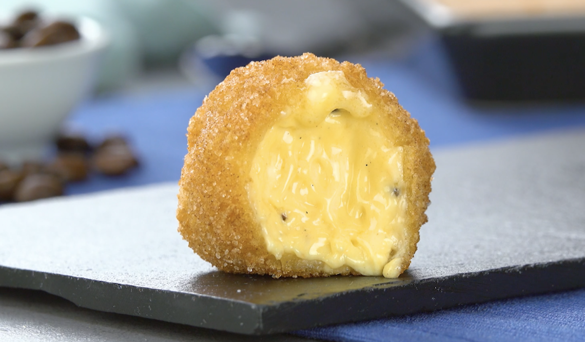

Here's a recipe for deep fried butter

Buttery balls fried until golden and crispy.
"I can't believe it is butter!"
Ingredients:
- 1/2 cup of unsalted butter, at room temperature
- 1 cup of all-purpose flour
- 1/2 teaspoon of baking powder
- 1/4 teaspoon of salt
- 1/4 teaspoon of cayenne pepper (optional)
- 1/2 cup of milk
- 2 cups of vegetable oil, for frying
Instructions:
- In a mixing bowl, beat the softened butter until creamy.
- In a separate bowl, whisk together the flour, baking powder, salt, and cayenne pepper (if using).
- Gradually add the flour mixture to the butter, stirring until well combined.
- Add the milk and stir until the mixture forms a dough.
- Roll the dough into small balls or nuggets, about 1 tablespoon in size.
- Heat the vegetable oil in a deep fryer or heavy-bottomed pot to 375°F.
- Working in batches, carefully add the butter balls to the hot oil and fry for 1-2 minutes, or until golden brown and crispy.
- Remove the deep-fried butter from the oil with a slotted spoon and drain on a paper towel-lined plate.
- Serve hot as a snack or appetizer.
Note: Deep-fried butter is a decadent and indulgent treat that should be enjoyed in moderation. It's best served hot, as the butter will melt inside the crispy outer layer. You can also experiment with adding different seasonings or spices to the batter for added flavor. Enjoy!